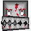

Requirements come first.
RDL reads map metadata and existing BAT hints. It supports Doom, Doom II, TNT and Plutonia. A missing TNT or Plutonia IWAD is never quietly replaced with Doom II.

RDL_RENEGADE DOOMER LAUNCHERWINDOWS LAUNCHER / PUBLIC PREVIEW
Choose your TC or weapons mod. Stack your addons. Double-click a map. RDL checks which base WAD it needs before you jump in.
01 / BUILD THE LOADOUT
Choose a total conversion or weapons mod. Import a profile from your BAT collection or add mod files yourself.
Drag files into the addons area. Move them up or down to control the order in which they load. RDL remembers your addons when you reopen it.
Point RDL at your Maps folder. Browse screenshot tiles, search your collection, and adjust tile size.
The map drives base-WAD selection. Clear requirements are automatic; ambiguous packs ask you to choose once.
02 / MAKE IT YOURS
28 coordinated palettes. From black and crimson to neon green and pink. Explore eight of them below.
Screenshots show the actual launcher rendered with example map names. Your collection and assigned images fill the tiles; games and map packs are not included.
Renegade · UAC Steel · Hellfire · Toxic Waste · Phobos · Night Ops · Cyberpunk · Synthwave · Arctic · Abyss · Royal · Blood Moon · Desert Dust · Classic Doom · Paper · Solarized · Frost · High Contrast · Doom 64 · Mars · Slime Factory · Cacodemon · Revenant · BFG · Ultramarine · Quake · Midnight · Vaporwave
03 / LESS FRICTION
RDL reads map metadata and existing BAT hints. It supports Doom, Doom II, TNT and Plutonia. A missing TNT or Plutonia IWAD is never quietly replaced with Doom II.
In-game settings save to a config for the TC or weapons mod, rather than changing for every map, WAD or addon. Import an existing INI when you need your own setup.
Remember the chosen mod, map, addon order and selected INI. Return to a saved setup without assembling the loadout again.
Scan for Wiki and Doom forum screenshots, with YouTube thumbnail choices when needed. RDL checks that previews load, filters diagrams and saves the source link. Choose a working preview and apply it inside the launcher.
04 / READY WHEN YOU ARE
Windows x64 · .NET Framework 4.8 · Public preview v0.1.2-preview
Portable ZIP. No launcher account required. Bring your own Doom engine, legally owned base WADs, maps and mods.
This is a preview build. Not every scripted map and gameplay mod can be combined; RDL prompts when it detects conflicts. Engine launch behavior still needs wider player testing.
SUPPORT / DONATE
Enjoying the launcher? Optional donations help support the project.